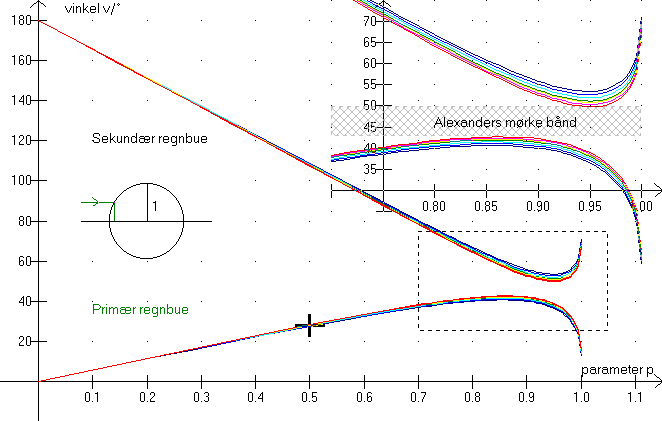
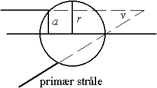

På dette billede er regnbuevinklen afbildet som funktion af indfaldsparameteren p, der er defineret ved p = , hvor a er afstanden fra strålen til dråbens midte, og r er dråbens radius, (se figuren til højre). Det ses tydeligt, at ingen stråler spredes ind i området mellem 42° og 50°.

Benyt billedet til at beregne ca.-værdier for mængden af stråling, der spredes ind i nedenstående vinkelområder, idet mængden af sollys, der rammer dråben sættes til 100 % svarende til 0 £ p £ 1 for begge halvdele af dråben. (f.eks. svarer parameterintervallet [0; 0,456] til 22,8% af strålingen).
Man kan vælge en farve vha. trackbaren nederst til venstre. »Mærke, F2« gør det lettere at aflæse de til vinklerne hørende parameterværdier. Omregn herefter (sum af) parameterintervaller til stråling i procent.
vinkel, v |
Parameterværdi(er) |
vinkelinterval |
stråling / % |
||
0° |
0°-25° |
||||
25° |
25°-35° |
||||
35° |
35°-Vmax |
||||
60° |
Vmin-60° |
||||
100° |
60°-100° |
||||
180° |
100°-180° |
||||
Farve =
Vmax =
Vmin =
Tegn et histogram over strålingen som funktion af vinklen.
Dvs. vinkelintervallerne afsættes på 1.-aksen, og over intervallerne indtegnes rektangler, hvis arealer svarer til strålingen i %.
Fra hvilken halvdel af dråben kommer den primære regnbue?
Fra hvilken halvdel af dråben kommer den sekundære regnbue?
Her ses tydeligt, at den primære regnbue er smallere og derfor også mere lysende end den sekundære regnbue.
Hvorfor er Alexanders mørke bånd, mørkere end himlen uden for regnbuerne?
I hvilken rækkefølge ses farverne i regnbuerne?